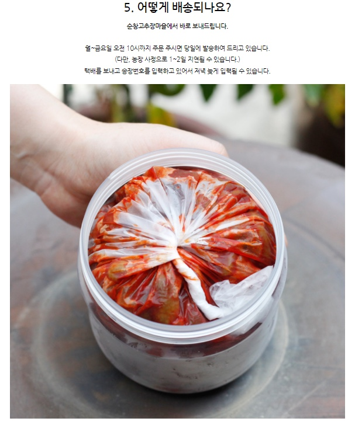

우리나라에서 고추장을 담그기 시작한 것은 1700년대 후반으로, 1800년대 초의 『규합총서』에는 순창 고추장과 천안 고추장이 팔도의 명물 중 하나로 소개되어 있다. 『월여농가』(1861년)에서는 고추장을 ‘번초장’이라 하였다. 『증보산림경제』(1765년)에는 “콩으로 담근 말장(末醬)가루 한 말에 고춧가루 세 홉, 찹쌀가루 한 되의 세 가지 맛을 취하여 좋은 청장(재래식 간장(국간장))으로 침장한 뒤 햇볕에 숙성시킨다”고 씌어 있어 지금과 비슷한 고추장을 담가 먹었음을 알 수 있다.
고추장 중 순창 명진 고추장이 명물이라고 한다.  git test차 내용 수정